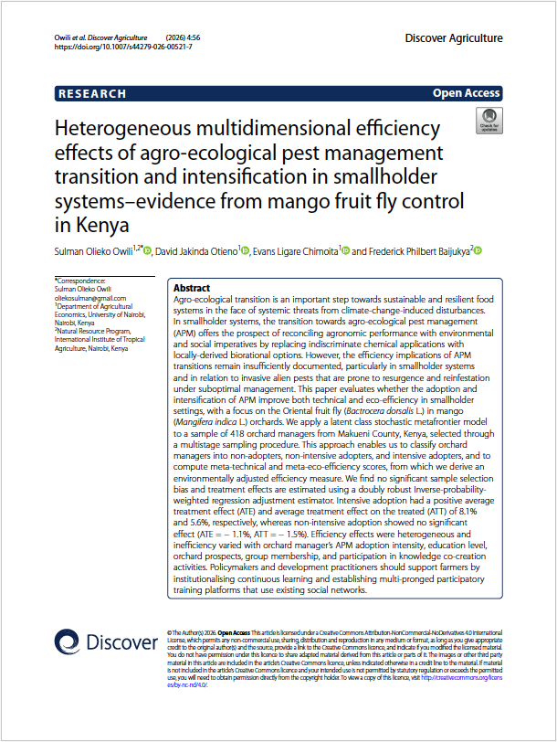
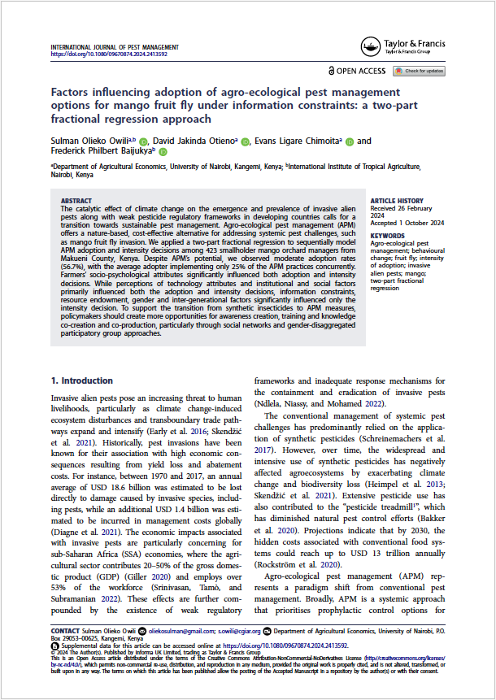
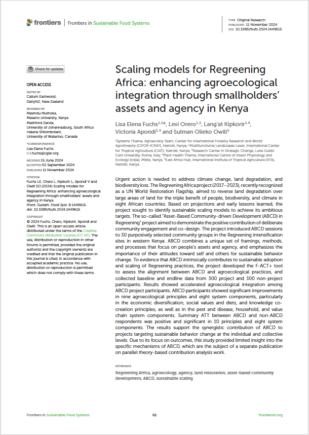
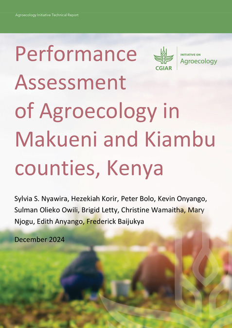
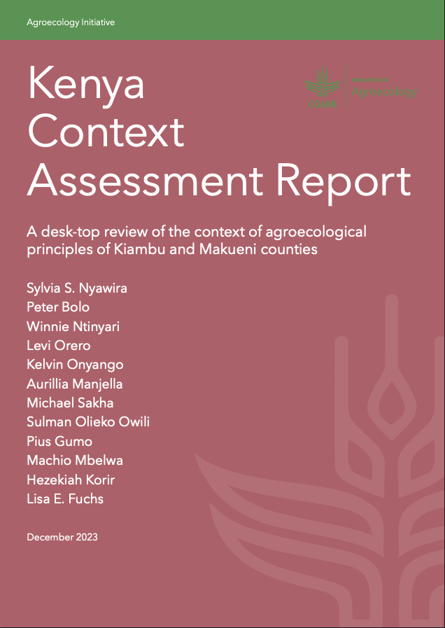
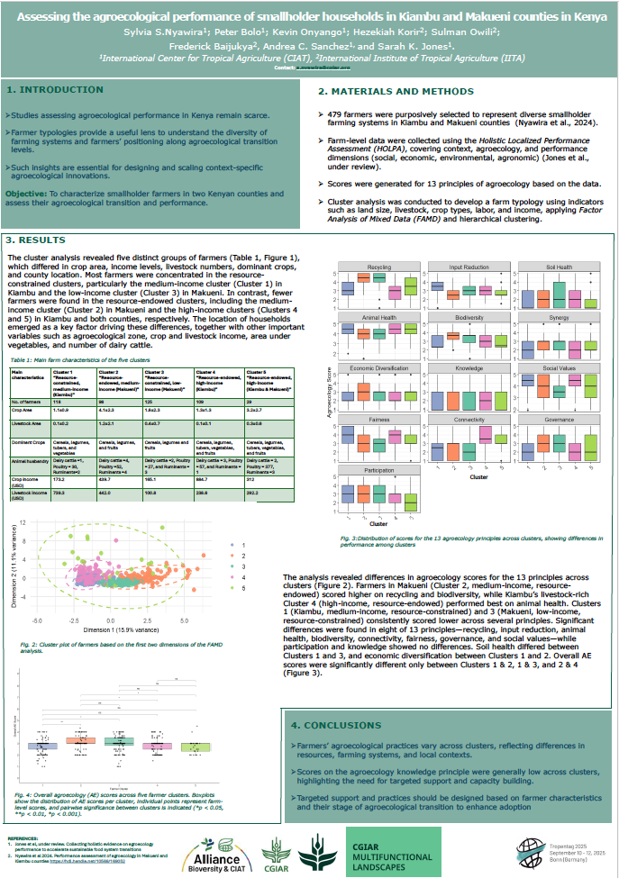
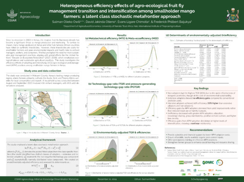

Biography
Sulman is an agricultural and applied economist dedicated to applying innovative research methods to inform sustainable food systems policies and advance sustainable development in the agri-food sector. In 2023, he was recognised as the Best Collaborative Masters in Agricultural and Applied Economics (CMAAE) student, an accolade awarded within a programme comprising eight leading universities across Eastern and Southern Africa. Earlier that year, he was also ranked the second-best master’s student in the Faculty of Agriculture at the University of Nairobi. Sulman has served as a Research Fellow at the International Institute of Tropical Agriculture (IITA) and has undertaken numerous consultancy engagements with international research organisations, including IITA, World Agroforestry (CIFOR-ICRAF), the American Heart Association (AHA), and the Alliance of Bioversity International and CIAT. His research interests span production, resource, and ecological economics; causal analysis; microeconomics; Bayesian econometrics; statistics; and quantitative modelling. His work is particularly biased towards efficiency analysis in sustainable food systems, technology adoption, and innovation systems as pathways to food sovereignty, poverty alleviation, and the empowerment of marginalised communities, while mitigating the impacts of climate change.
Recent Publications
Owili, S.O., Otieno, D.J., Chimoita, E.L. et al (2026). Heterogeneous multidimensional efficiency effects of agro-ecological pest management transition and intensification in smallholder systems–evidence from mango fruit fly control in Kenya. Discov Agric 4, 56. DOI:10.1007/s44279-026-00521-7

Owili, S.O.; Otieno, D. J.; Chimoita, E. L.; Baijukya, F. P (2024). Factors influencing adoption of agro-ecological pest management options for mango fruit fly under information constraints: A two-part fractional regression approach. International Journal of Pest Management. DOI:10.1080/09670874.2024.2413592

Fuchs, L.E.; Orero, L; Kipkorir, L.; Apondi, V; Owili, S.O. (2024). Scaling Models for Regreening Africa: Enhancing Agroecological Integration through Smallholders' Assets and Agency in Kenya. Frontiers in Sustainable Food Systems. DOI:10.3389/fsufs.2024.1449615

Nyawira, S.S.; Korir, H.; Bolo, P..; Omondi, K..; Owili, S.O.; Letty, B.; Wamaitha, C..; Njogu, M..; Anyango, E.; Baijukya, F. (2024). Performance assessment of agroecology in Makueni and Kiambu counties, Kenya. CGSpace. https://hdl.handle.net/10568/169052

Nyawira, S.; Bolo, P.; Ntinyari, W.; Orero, L.; Onyango, K.; Manjella, A.; Sakha, M.; Owili, S.O.; Gumo, P.; Mbelwa, M.; Korir, H.; Fuchs, L.E. (2023). Kenya Context Assessment Report: A desk-top review of the context of agroecological principles of Kiambu and Makueni counties. CGSpace. DOI:10.13140/RG.2.2.36127.53928

Nyawira, S.S., Bolo, P., Onyango, K., Korir, H., Owili, S.O., Baijukya, F. P., Sanchez, A.C., and Jones, S.K. (2025). Assessing the agroecological performance of smallholder households in Kiambu and Makueni counties in Kenya. Tropentag. Bonn, Germany. https://www.tropentag.de/2025/abstracts/posters/725.pdf

Owili, S.O.; Otieno, D. J.; Chimoita, E. L.; Baijukya, F. P (2024). Heterogeneous efficiency effects of agro-ecological fruit fly management transition and intensification among smallholder mango farmers: A latent class stochastic metafrontier approach. Agroecology Workshop, World Agroforestry (CIFOR-ICRAF). Nairobi, Kenya. https://hdl.handle.net/10568/170186

Working Papers
Fuchs, L.E., Orero, L., van Dien, L.C., Apondi, V., Kipkorir, L., Kamau, A., Muia, D., Michuki, G., Njiru, R., and Owili, S.O. (2025). Heterogeneous pathways of an asset-based, agency-focused approach to sustainable land and livelihoods restoration in Kenya: A mixed-methods approach. Working paper.
Fuchs, L.E., Orero, L., van Dien, L.C., Apondi, V., Kipkorir, L., and Owili, S.O. (2025). Gendered impact of asset-based community development on sustainable forest, tree and agroforestry systems: An analysis of farmer perspectives. Working paper.
Nyawira, S.S., Bolo, P., Onyango, K., Korir, H., Owili, S.O., Baijukya, F. P., Sanchez, A.C., and Jones, S.K. (2025). Assessing the agroecological performance of smallholder households in Kiambu and Makueni counties in Kenya. Working paper.
Owili, S.O. Korir, H., Onyango, K., Bolo P., Baijukya, F.P., Nyawira, S.S., Anyango, E., Adoyo, B., and Geck, M. (2025). Behavioural mechanisms and social capital in pro-agroecological transitions-a comparative analysis of two case studies in Kenya. Working paper.
Owili, S.O. (2025). Agro-ecological pest control options for improved eco-efficiency of smallholder farming systems in the face of invasive alien pests. Book chapter.